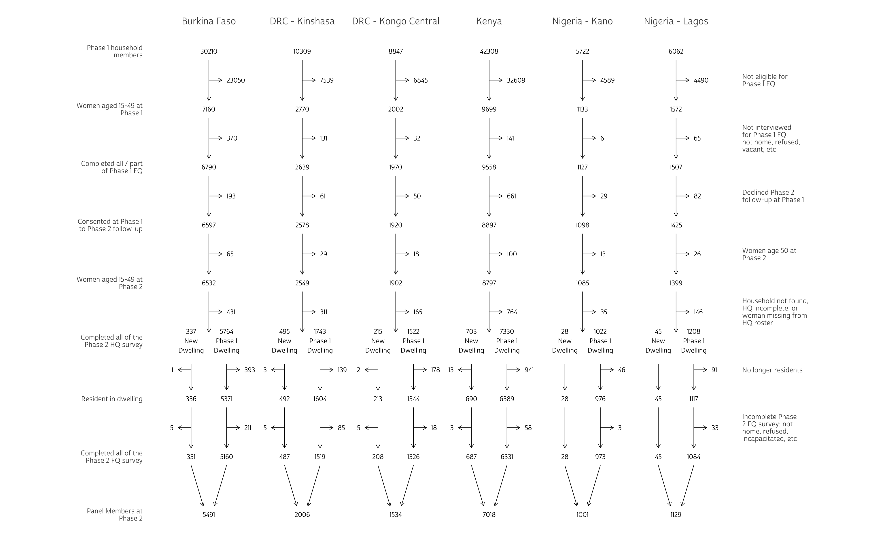
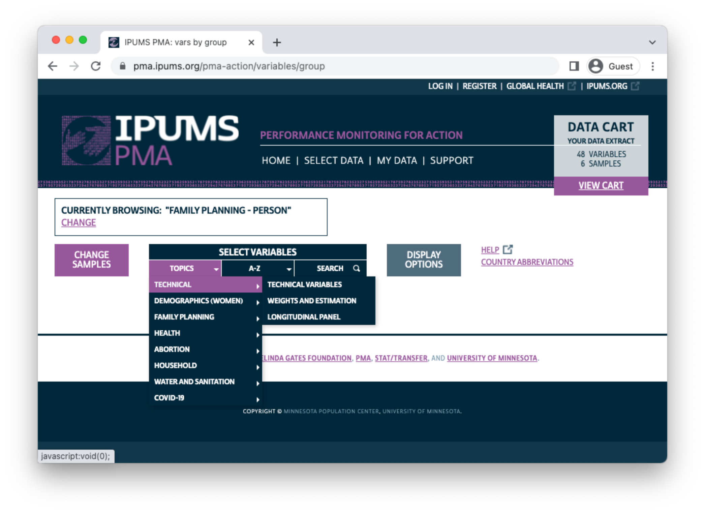
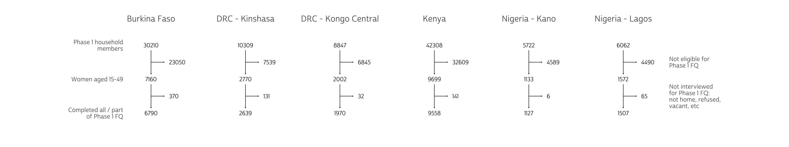
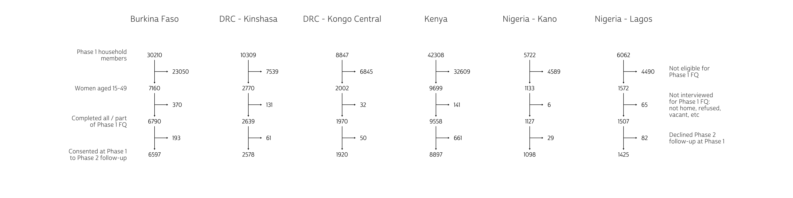

When we introduced new Family Planning Panel Data from PMA last month, we mentioned that PMA uses a multi-stage cluster sample design for each phase of the panel study. This means you’ll find data from a Household Questionnaire administered once each year, and you’ll find data from a subsequent Female Questionnaire collected shortly afterward. Three years - or phases - of data will be collected in total.
Because data are collected through two questionnaires administered in three phases, there are several places where incomplete or missing data may indicate loss to follow-up - dropped cases from the original panel design. At the same time, PMA uses an open panel design, whereby women who move into the study area or reach participation age after Phase 1 are permitted to join the panel at any subsequent phase.
In this post, we’ll cover these issues in detail. To illustrate, we’ll be using a wide format data extract from IPUMS PMA that includes “All cases” from both currently available phases. In other words, we’ll include every member of the household roster collected in the Household Questionnaire at the start of each phase (even if no Female Questionnaire was completed by that person).
To make our explanation easier to follow, we’ll make use of a data visualization tool known in clinical research settings as a CONSORT diagram.
CONSORT Diagram
A CONSORT diagram is a flowchart showing enrollment and attrition points, most typically in longitudinal studies. PMA publishes a CONSORT diagram together with the User Notes for each longitudinal sample. We’ll consider the 6 samples for which harmonized Phase 1 and Phase 2 data are currently available:
We’ve constructed a multi-sample CONSORT diagram for this post using the ggplot2 package for R, but we’ve hidden the source code for readers who might want to stay focused on our sample design discussion. In you’re interested, click the “Show CONSORT diagram source code” button to follow along as we build our diagram below.
Show CONSORT diagram source code
# load custom font
library(sysfonts)
library(showtext)
sysfonts::font_add(
family = "cabrito",
regular = "../../fonts/cabritosansnormregular-webfont.ttf"
)
showtext::showtext_auto()
# define consort function
consort <- function(dat){
dat <- dat %>%
ungroup() %>%
arrange(pop, step, keep) %>%
mutate(
across(c(pop, label), ~as_factor(.x)),
label = fct_rev(label),
x = as.double(pop) %>% ifelse(keep, ., . + 0.19),
y = as.double(label),
x_line1 = ifelse(keep, x, x - 0.19), # start horiz line at origin
x_line2 = ifelse(keep, x, x - 0.05), # end horiz line 0.05 before label
y_line1 = ifelse(keep, y - 0.3, y),
y_line2 = ifelse(keep, y - 1.7, y),
across(
starts_with("x"),
~case_when(
step <= 6 & (is.na(samedw) | !keep) ~ .x, # leave as-is
step == 9 ~ .x, # leave as-is
keep & samedw ~ .x + 0.19, # right-side dwelling
keep & !samedw ~ .x - 0.19, # left-side dwelling
!keep ~ .x + .19, # dwelling discard
)
),
across(
starts_with("x"), # flip dwelling discard
~case_when(!keep & !samedw ~ .x - 2*(.x - floor(.x)), T ~.x)
),
x_line2 = case_when(
step == 8 & keep & samedw ~ x_line2 - 0.13, # back to origin at step 8
step == 8 & keep & !samedw ~ x_line2 + 0.13,
TRUE ~ x_line2
),
across(
matches("line"),
~ifelse(keep & step == max(step), NA, .x) %>% # no lines at final step
as.double()
),
y = case_when(step == 9 ~ y - 1, TRUE ~ as.double(y)),
y_line1 = ifelse(step == 6 & keep, y_line1 - 0.5, y_line1),
hjust = case_when(
keep ~ "center",
!keep & !samedw ~ "right",
TRUE ~ "left"
)
)
dat %>%
ggplot(aes(x = x, y = y)) +
geom_text(
aes(label = n, hjust = hjust),
size = 3,
family = "cabrito"
) +
geom_segment(
arrow = arrow(length = unit(0.008, "npc")),
aes(x = x_line1, xend = x_line2, y = y_line1, yend = y_line2),
size = .3
) +
scale_x_continuous(
position = "top",
breaks = 1:6,
labels = levels(dat$pop)
) +
scale_y_continuous(
breaks = if(max(dat$step) == 9){
seq(0, 2*max(dat$step)-1, by = 2)
} else if(max(dat$step) == 1){
1
} else {
seq(0, 2*max(dat$step)-1, by = 2) + 1
},
labels = dat %>% filter(keep) %>%
count(label) %>% pull(label) %>% str_wrap(20),
sec.axis = sec_axis(
trans = ~.,
breaks = if(max(dat$step) == 9){
seq(3, 2*max(dat$step)-2, by = 2)
} else if(max(dat$step) == 1){
NULL
} else {
seq(2, 2*max(dat$step)-1, by = 2)
},
labels = if(max(dat$step) > 1){
dat %>% filter(!keep) %>% count(label) %>%
pull(label) %>% str_wrap(20)
} else {
NULL
}
),
expand = if(max(dat$step) > 4){
expansion(mult = 0.05)
} else {
expansion(mult = 0.3)
}
) +
theme_minimal() +
theme(
text = element_text(family = "cabrito"),
axis.ticks = element_blank(),
axis.title = element_blank(),
axis.text.x = element_text(size = 12),
panel.grid = element_blank(),
panel.border = element_blank(),
plot.margin = margin(20, 100, 20, 100)
)
}

Setup
To get started, we’ll need to request a wide longitudinal extract from the IPUMS PMA data website. As shown above, we’ll select all 6 of the available samples, and choose “All Cases (Respondents and Non-respondents to Household and Female Questionnaires)”. Notice that both phases are included with each sample when you request a longitudinal extract.
Variables describing sample composition are located under the “Technical” topics heading. Our extract will contain all of the variables in the “Technical Variables” and “Longitudinal Panel” subheadings shown:

Once you’ve finished selecting variables and downloaded an extract,
you’ll receive two files: an .xml DDI codebook, and a
.dat.gz data file. We’ve saved both of these files in a
folder called “data” in our R Working Directory, so we’ll load them into
R together with the tidyverse and ipumsr packages.
library(ipumsr)
library(tidyverse)
dat <- read_ipums_micro(
ddi = "data/pma_00086.xml",
data = "data/pma_00086.dat.gz"
)
When you first load your wide data extract into R, you’ll notice that most variable names are duplicated: the same variable will appear once with the suffix “1” for Phase 1 variables, and again with the suffix “2” for Phase 2 variables. For example, you’ll find two copies of SAMPLE:
# A tibble: 5 × 2
SAMPLE_1 n
<int+lbl> <int>
1 18012 [Congo, Democratic Republic (Kinshasa and Kongo Central… 19245
2 40410 [Kenya 2019 Baseline] 42708
3 56609 [Nigeria (Kano and Lagos) 2019 Baseline] 12000
4 85409 [Burkina Faso 2019 Baseline] 30357
5 NA 98687# A tibble: 5 × 2
SAMPLE_2 n
<int+lbl> <int>
1 18015 [Congo, Democratic Republic (Kinshasa and Kongo Central… 23186
2 40413 [Kenya 2020 Phase 2] 48975
3 56612 [Nigeria (Kano and Lagos) 2020 Phase 2] 13227
4 85412 [Burkina Faso 2021 Phase 2] 33931
5 NA 83678IPUMS PMA combines sub-nationally representative samples for DRC
(Kinshasa and Kongo Central) and Nigeria (Kano and Lagos) with one SAMPLE
code each. Here, we’ll separate those samples and abbreviate country
names to ensure that everything fits nicely in our graphics output.
We’ll also use the same recoded variable for Phase 1 and Phase 2 samples
together. Let’s call this variable pop (for “population of
study”).
We’ll combine the COUNTRY name for each sample together with the DRC and Nigeria regions shown in GEOCD and GEONG, respectively.
# A tibble: 6 × 4
COUNTRY GEOCD GEONG n
<int+lbl> <int+lbl> <int+lbl> <int>
1 1 [Burkina Faso] NA NA 57990
2 2 [Congo, Democratic Republic] 1 [Kinshasa] NA 20831
3 2 [Congo, Democratic Republic] 2 [Kongo Central] NA 17625
4 7 [Kenya] NA NA 83645
5 9 [Nigeria] NA 2 [Lagos] 11936
6 9 [Nigeria] NA 4 [Kano] 10970# Abbreviate "DRC" and combine `COUNTRY` with `GEOCD` and `GEONG`
dat <- dat %>%
mutate(
across(
c(COUNTRY, GEOCD, GEONG),
~as_factor(.x) %>% as.character()
),
COUNTRY = if_else(str_detect(COUNTRY, "Congo"), "DRC", COUNTRY),
pop = case_when(
!is.na(GEOCD) ~ paste(COUNTRY, "-", GEOCD),
!is.na(GEONG) ~ paste(COUNTRY, "-", GEONG),
TRUE ~ COUNTRY
)
)
dat %>% count(pop)
# A tibble: 6 × 2
pop n
<chr> <int>
1 Burkina Faso 57990
2 DRC - Kinshasa 20831
3 DRC - Kongo Central 17625
4 Kenya 83645
5 Nigeria - Kano 10970
6 Nigeria - Lagos 11936Phase 1
Phase 1 marks the beginning of the PMA panel study (baseline). As we’ve mentioned, it consists of two separate questionnaires administered in stages: first, resident enumerators visited 35 household dwellings selected at random within each sample cluster, or enumeration area. If a qualifying respondent was available, they were invited to complete a Household Questionnaire1 including a census of all household members and visitors who stayed there during the night before the interview. If this census included any women aged 15-49, the enumerator would later return to the household and invite each eligible woman to complete a Female Questionnaire2 and participate in the three-year panel study.
We’ll take a look at the inclusion criteria and missing data codes for each questionnaire, in turn.
Household Questionnaire
In our wide data extract, each PANELWOMAN is a woman who completed all or part of the Phase 1 Female Questionnaire and agreed to participate in the longitudinal panel study: as a result, you’ll find all of her Phase 1 responses and her Phase 2 responses together in a single row.
This is not the case for household members who are not,
themselves, participants in the panel study. These household members are
represented by one row per phase. For example, if a young child
was listed on the Phase 1 Household Questionnaire, you’ll find details
about their age in AGEHQ_1,
their sex in SEX_1, and
their relationship to the head of household in RELATE_1.
If you look in the same row for corresponding Phase 2 variables (AGEHQ_2, SEX_2, and RELATE_2),
you’ll find NA values even if the child still lived in the
household at Phase 2: their Phase 2 data may be located in another row
(with NA values listed for Phase 1), or it may not exist if
the child was not listed on the Phase 2 household roster. It is not
possible to link Phase 1 and Phase 2 responses for household members who
were not participants in the panel study.
This explains why, for example, you’ll see a large number of
NA values in RESULTHQ_1,
which gives the result of the Phase 1 Household Questionnaire.
# A tibble: 10 × 2
RESULTHQ_1 n
<int+lbl> <int>
1 1 [Completed] 103411
2 2 [Not at home] 210
3 3 [Postponed] 8
4 4 [Refused] 230
5 5 [Partly completed] 47
6 6 [Vacant or not a dwelling] 95
7 7 [Destroyed] 10
8 8 [Not found] 3
9 9 [Absent extended period] 296
10 NA 98687Close to half of the values in RESULTHQ_1
are NA: these are household members for whom no linked
Phase 2 data exists.
What about the other values in RESULTHQ_1? You’ll notice a range of outcomes including:
1- Completed5- Partly completed- several other codes giving the reason why no household interview occurred
If no household interview occurred, PMA creates one row to represent the household in RESULTHQ_1. Otherwise, if the household roster was completed during the interview, PMA creates one row for each person on the roster.
In order to determine the proportion of households that completed all
or part of the Household Questionnaire - or any other
household-level statistics - you must count only one
row per household. Each Phase 1 household receives a unique identifier
in HHID_1
- this value is an empty string "" for household members
included only in Phase 2. All Phase 1 households have a unique HHID_1,
regardless of the outcome recorded in RESULTHQ_1.
Therefore, you can use group_by
to find the RESULTHQ_1
outcome for each household via HHID_1. To
obtain the proportion of Phase 1 households that completed all or part
of the questionnaire, we’ll first use filter to
drop Phase 2 households with the value "". Then, we’ll use
slice to
include only the first row in each household. Finally, we’ll count the
number of fully (code 1) or partly (code 5) completed questionnaires in
RESULTHQ_1
- the base R function prop.table
derives proportions for these counts.
dat %>%
filter(HHID_1 != "") %>% # drop Phase 2 households
group_by(HHID_1) %>%
slice(1) %>% # include only the first row in each household
ungroup() %>%
count(RESULTHQ_1 %in% c(1, 5)) %>% # how many households completed all / part?
mutate(prop = prop.table(n))
# A tibble: 2 × 3
`RESULTHQ_1 %in% c(1, 5)` n prop
<lgl> <int> <dbl>
1 FALSE 852 0.0365
2 TRUE 22494 0.964 Conversely, it is often useful to exclude non-interviewed households when calculating person-level statistics. In the first row of our CONSORT diagram above, we drop these households before we count the total number of sampled Phase 1 household members.
# A tibble: 6 × 2
pop n
<chr> <int>
1 Burkina Faso 30210
2 DRC - Kinshasa 10309
3 DRC - Kongo Central 8847
4 Kenya 42308
5 Nigeria - Kano 5722
6 Nigeria - Lagos 6062Show CONSORT diagram source code

Female Questionnaire
IPUMS PMA uses a non-response code labeled “Not interviewed (household questionnaire)” for variables related to questions that were only relevant if the Household Questionnaire was fully or partly completed. This includes ELIGIBLE_1, which indicates whether a particular household member was a woman aged 15-49 at Phase 1, and therefore eligible for the Phase 1 Female Questionnaire. If the household was not interviewed, eligibility for the Female Questionnaire could not be determined.
# A tibble: 12 × 3
RESULTHQ_1 ELIGIBLE_1 n
<int+lbl> <int+lbl> <int>
1 1 [Completed] 0 [No] 79091
2 1 [Completed] 1 [Yes, eligible female respondent] 24320
3 2 [Not at home] 96 [Not interviewed (household questionnaire)] 210
4 3 [Postponed] 96 [Not interviewed (household questionnaire)] 8
5 4 [Refused] 96 [Not interviewed (household questionnaire)] 230
6 5 [Partly completed] 0 [No] 31
7 5 [Partly completed] 1 [Yes, eligible female respondent] 16
8 6 [Vacant or not a dwelling] 96 [Not interviewed (household questionnaire)] 95
9 7 [Destroyed] 96 [Not interviewed (household questionnaire)] 10
10 8 [Not found] 96 [Not interviewed (household questionnaire)] 3
11 9 [Absent extended period] 96 [Not interviewed (household questionnaire)] 296
12 NA NA 98687RESULTLFQ_1 shows the result of the Female Questionnaire for eligible women. The non-response code “NIU (not in universe)” is used for household members who were not eligible.
# A tibble: 9 × 2
RESULTFQ_1 n
<int+lbl> <int>
1 1 [Completed] 23542
2 2 [Not at home] 427
3 3 [Postponed] 20
4 4 [Refused] 150
5 5 [Partly completed] 49
6 10 [Incapacitated] 145
7 96 [Not interviewed (household questionnaire)] 852
8 99 [NIU (not in universe)] 79124
9 NA 98687You can calculate the proportion of eligible women who completed the Phase 1 Female Questionnaire like so:
dat %>%
filter(ELIGIBLE_1 == 1) %>% # drops ineligible / Phase 2 household members
count(RESULTFQ_1 %in% c(1, 5)) %>%
mutate(prop = prop.table(n))
# A tibble: 2 × 3
`RESULTFQ_1 %in% c(1, 5)` n prop
<lgl> <int> <dbl>
1 FALSE 745 0.0306
2 TRUE 23591 0.969 Our CONSORT diagram shows the total number of women who were eligible to participate in the panel study at Phase 1, after excluding women who:
- were members of a household where no Phase 1 Household Questionnaire was administered
- were not eligible (aged 15-49)
- did not complete at least part of the Phase 1 Female Questionnaire
# A tibble: 6 × 2
pop n
<chr> <int>
1 Burkina Faso 6790
2 DRC - Kinshasa 2639
3 DRC - Kongo Central 1970
4 Kenya 9558
5 Nigeria - Kano 1127
6 Nigeria - Lagos 1507Show CONSORT diagram source code
# Step 2: HH members Eligible at Phase 1
hh <- hh %>% filter(keep) %>% mutate(step = 2, keep = ELIGIBLE_1 == 1)
hh_plot <- hh %>%
count(step, keep) %>%
mutate(label = if_else(
keep,
"Women aged 15-49",
"Not eligible for Phase 1 FQ"
)) %>%
bind_rows(hh_plot)
# Step 3: Result of Phase 1 FQ
hh <- hh %>% filter(keep) %>% mutate(step = 3, keep = RESULTFQ_1 %in% c(1, 5))
hh_plot <- hh %>%
count(step, keep) %>%
mutate(label = if_else(
keep,
"Completed all / part of Phase 1 FQ",
"Not interviewed for Phase 1 FQ: not home, refused, vacant, etc"
)) %>%
bind_rows(hh_plot)
consort(hh_plot)

Enumerators invited these women to participate in Phase 2 of the panel study one year later. Only women who agreed to participate at that time are considered panel members at Phase 2, as shown in PANELWOMAN_2.3
Their responses to the panel invitation are recorded in SURVEYWILLING_1. IPUMS PMA uses the non-response code “Not interviewed (female questionnaire)” to indicate women who were eligible, but not interviewed for the Female Questionnaire as shown in RESULTLFQ_1. Additionally, “No response or missing” is used for women who did not respond to the panel invitation.
# A tibble: 7 × 2
SURVEYWILLING_1 n
<int+lbl> <int>
1 0 [No] 1023
2 1 [Yes] 22515
3 95 [Not interviewed (female questionnaire)] 743
4 96 [Not interviewed (household questionnaire)] 852
5 98 [No response or missing] 53
6 99 [NIU (not in universe)] 79124
7 NA 98687You should include “No response or missing” cases when calculating the proportion of Phase 1 female respondents who agreed to participate in the panel follow-up:
dat %>%
filter(RESULTFQ_1 %in% c(1, 5)) %>% # Drops NIU and Not interviewed cases
count(SURVEYWILLING_1) %>%
mutate(prop = prop.table(n))
# A tibble: 3 × 3
SURVEYWILLING_1 n prop
<int+lbl> <int> <dbl>
1 0 [No] 1023 0.0434
2 1 [Yes] 22515 0.954
3 98 [No response or missing] 53 0.00225Show CONSORT diagram source code
# Step 4: Willing to participate in Phase 2
hh <- hh %>% filter(keep) %>% mutate(step = 4, keep = SURVEYWILLING_1 == 1)
hh_plot <- hh %>%
count(step, keep) %>%
mutate(label = if_else(
keep,
"Consented at Phase 1 to Phase 2 follow-up",
"Declined Phase 2 follow-up at Phase 1"
)) %>%
bind_rows(hh_plot)
consort(hh_plot)

Phase 2
Both questionnaires were administered again in Phase 2, approximately one year later. Resident enumerators visited the same dwellings where Phase 1 interviews occurred; if the woman’s household had moved elsewhere within the study area,4 enumerators used local contacts to find its new location. If found, they administered a Household Questionnaire including an updated household roster.
As we’ve mentioned, any woman aged 15-49 listed on the Phase 2 household roster was eligible to complete a Phase 2 Female Questionnaire. However, only women who completed all or part of a Phase 1 Female Questionnaire are considered members of the panel in PANELWOMAN_2.
Household Questionnaire
Several variables are available to describe the status of households surveyed at Phase 2. As with Phase 1, RESULTHQ_2 describes the result of the Phase 2 Household Questionnaire.
# A tibble: 10 × 2
RESULTHQ_2 n
<int+lbl> <int>
1 1 [Completed] 116955
2 2 [Not at home] 298
3 3 [Postponed] 15
4 4 [Refused] 425
5 5 [Partly completed] 16
6 6 [Vacant or not a dwelling] 861
7 7 [Destroyed] 227
8 8 [Not found] 209
9 9 [Absent extended period] 313
10 NA 83678SAMEDWELLING_2 indicates whether the Household Questionnaire was administered at the same physical dwelling from Phase 1, or whether the enumerator located the woman’s household in a new dwelling.
# A tibble: 6 × 2
SAMEDWELLING_2 n
<int+lbl> <int>
1 0 [No] 7255
2 1 [Yes] 110973
3 95 [Not interviewed (female questionnaire)] 15
4 96 [Not interviewed (household questionnaire)] 19
5 99 [NIU (not in universe)] 1057
6 NA 83678Each Phase 2 sample may also include new households that were not included in Phase 1, as indicated by HHTYPE_2: these are replacement households drawn for enumeration areas where more than 10% of Phase 1 households were no longer present. They account for all of the non-response code shown in SAMEDWELLING_2, as no prior dwelling was sampled.
# A tibble: 6 × 3
SAMEDWELLING_2 HHTYPE_2 n
<int+lbl> <int+lbl> <int>
1 0 [No] 3 [Panel woman followup] 7255
2 1 [Yes] 1 [Phase 1 Dwelling] 110973
3 95 [Not interviewed (female questionnaire)] 2 [Replacement cross-section] 15
4 96 [Not interviewed (household questionnaire)] 2 [Replacement cross-section] 19
5 99 [NIU (not in universe)] 2 [Replacement cross-section] 1057
6 NA NA 83678As mentioned above, it is not possible to link Phase 1 and Phase 2 records for household members who were not women participating in the panel study. However, the variable HHMEMSTAT_2 does describe whether a Phase 1 household member was listed on the household roster for Phase 2; if not, PMA creates a Phase 2 record for that person indicating whether they moved or were deceased.
# A tibble: 10 × 2
HHMEMSTAT_2 n
<int+lbl> <int>
1 1 [Still a resident in household] 84402
2 2 [Moved within EA] 1155
3 3 [Moved outside of EA] 4815
4 4 [Moved out of household for school] 1117
5 5 [Deceased] 437
6 95 [Not interviewed (female questionnaire)] 213
7 96 [Not interviewed (household questionnaire)] 2337
8 97 [Don't know] 30
9 99 [NIU (not in universe)] 24813
10 NA 83678After excluding women who reached age 50 at Phase 2, our CONSORT diagram diverges to show whether panel members were found in their Phase 1 dwelling or a new one. Women whose household was not found in the study area are considered lost to follow-up, as are those where the Phase 2 Household Questionnaire was not completed.
The variable HHPANELP2_2 indicates whether any woman who completed the Phase 1 Female Questionnaire was living in the dwelling at Phase 2. Women who were no longer residents of the household are also considered lost to follow-up.
# A tibble: 3 × 2
HHPANELP2_2 n
<int+lbl> <int>
1 0 [No] 29587
2 1 [Yes] 89732
3 NA 83678Show CONSORT diagram source code
# Step 5: Aged out
hh <- hh %>% filter(keep) %>% mutate(step = 5, keep = AGE_1 < 49)
hh_plot <- hh %>%
count(step, keep) %>%
mutate(label = if_else(
keep,
"Women aged 15-49 at Phase 2",
"Women age 50 at Phase 2"
)) %>%
bind_rows(hh_plot)
# Step 6: Same dwelling
hh <- hh %>%
filter(keep) %>%
mutate(
step = 6,
keep = RESULTHQ_2 %in% 1,
samedw = SAMEDWELLING_2 %in% 1
) %>%
group_by(pop, samedw)
hh_plot <- hh %>%
mutate(samedw = ifelse(!keep, TRUE, samedw)) %>%
count(step, keep) %>%
mutate(
n = case_when(
keep & samedw ~ paste(n, "Phase 1", "Dwelling", sep = "\n"),
keep & !samedw ~ paste(n, "New", "Dwelling", sep = "\n"),
!keep ~ as.character(n)
),
label = if_else(
keep,
"Completed all of the Phase 2 HQ survey",
"Household not found, HQ incomplete, or woman missing from HQ roster"
)
) %>%
bind_rows(hh_plot %>% mutate(n = as.character(n)))
# Step 7: Resident in dwelling
hh <- hh %>% filter(keep) %>% mutate(step = 7, keep = HHMEMSTAT_2 %in% c(1, 99))
hh_plot <- hh %>%
count(step, keep) %>%
mutate(
n = as.character(n),
label = if_else(
keep,
"Resident in dwelling",
"No longer residents"
)
) %>%
bind_rows(hh_plot)
consort(hh_plot)
Female Questionnaire
Finally, eligible women who were found in a household at Phase 2 were invited to complete a Female Questionnaire. RESULTFQ_2 indicates the result of the Phase 2 Female Questionnaire both for panel members and women who were otherwise eligible to participate.
# A tibble: 11 × 2
RESULTFQ_2 n
<int+lbl> <int>
1 1 [Completed] 24756
2 2 [Not at home] 343
3 3 [Postponed] 40
4 4 [Refused] 278
5 5 [Partly completed] 24
6 7 [Respondent moved] 57
7 10 [Incapacitated] 241
8 95 [Not interviewed (female questionnaire)] 9
9 96 [Not interviewed (household questionnaire)] 2337
10 99 [NIU (not in universe)] 91234
11 NA 83678You can find the proportion of women who completed the Phase 2 Female Questionnaire that were also available at Phase 1 (i.e. panel members) like so:
# A tibble: 2 × 3
PANELWOMAN_2 n prop
<int+lbl> <int> <dbl>
1 0 [No] 6576 0.266
2 1 [Yes] 18180 0.734Wide data extracts make it particularly easy to
combine Phase 1 and Phase 2 variables for the same woman. Note that
potential panel members were identified at Phase 1: they are women who
agreed to participate in SURVEYWILLING_1
and were under age 49 in AGE_1. In
order to calculate the proportion of potential panel members who
ultimately completed the Female Questionnaire at Phase 2, you must
include Phase 1 female respondents for whom no Phase 2 data exists.
These cases are marked NA in RESULTFQ_2,
so they are easily included like so:
dat %>%
filter(SURVEYWILLING_1 == 1 & AGE_1 < 49) %>%
count(RESULTFQ_2 == 1) %>%
mutate(prop = prop.table(n))
# A tibble: 3 × 3
`RESULTFQ_2 == 1` n prop
<lgl> <int> <dbl>
1 FALSE 2452 0.110
2 TRUE 18180 0.817
3 NA 1632 0.0733The final row of our CONSORT diagram shows the total number of completed Phase 2 Female Questionnaires for each sample. The totals below match the results reported in each of the PMA User Guides published for individual samples.
dat %>%
group_by(pop) %>%
# denominator: potential panel members at Phase 1
filter(SURVEYWILLING_1 == 1 & AGE_1 < 49) %>%
# numerator: did a potential panel member complete Phase 2 FQ?
count(final = RESULTFQ_2 == 1) %>%
mutate(prop = prop.table(n)) %>%
# drop members who did not compete Phase 2 FQ / no record in Phase 2
filter(final) %>%
select(-final)
# A tibble: 6 × 3
# Groups: pop [6]
pop n prop
<chr> <int> <dbl>
1 Burkina Faso 5491 0.841
2 DRC - Kinshasa 2006 0.787
3 DRC - Kongo Central 1534 0.807
4 Kenya 7018 0.798
5 Nigeria - Kano 1001 0.923
6 Nigeria - Lagos 1130 0.808Show CONSORT diagram source code
# Step 8: Result of Phase 2 FQ
hh <- hh %>% filter(keep) %>% mutate(step = 8, keep = RESULTFQ_2 == 1)
hh_plot <- hh %>%
count(step, keep) %>%
mutate(
n = as.character(n),
label = if_else(
keep,
"Completed all of the Phase 2 FQ survey",
"Incomplete Phase 2 FQ survey: not home, refused, incapacitated, etc"
)
) %>%
bind_rows(hh_plot)
# Step 9: Final diagram
hh <- hh %>% filter(keep) %>% mutate(step = 9, keep = TRUE)
hh_plot <- hh %>%
group_by(pop) %>%
count(step, keep) %>%
mutate(
n = as.character(n),
label = "Panel Members at Phase 2"
) %>%
bind_rows(hh_plot)
consort(hh_plot)

Summary
There are ultimately several causes of loss to follow-up that may occur at different time points throughout the panel study. An individual is considered lost to follow-up if:
- The household moved out of the Phase 1 dwelling, and the new dwelling could not be located within the study area
- The Phase 2 Household Questionnaire was not completed (a respondent refused, was not available, etc)
- A panel member from the household was no longer a resident (deceased, moved, or status unknown)
- A panel member did not complete a Phase 2 Household Questionnaire (she refused, was not available, etc)
At the same time, the open panel design allows new participants to complete a Female Questionnaire at any phase. These women are not panel members at Phase 2, but they may become panel members at Phase 3 if they are eligible and agree to complete a forthcoming Phase 3 Female Questionnaire. Women can join the panel at Phase 2, for example, if they:
- Reach age 15 only after Phase 1 interviews were completed
- Move into a household sampled at Phase 2
For more details on sample design, check out the IPUMS PMA sample notes and User Guides published for individual samples at pmadata.org.
Questionnaires administered in each country may vary from this Core Household Questionnaire - click here for details.↩︎
Questionnaires administered in each country may vary from this Core Female Questionnaire - click here for details.↩︎
Women who completed the Phase 1 Female Questionnaire but declined to participate in the panel were given an opportunity to join the panel again at Phase 2 (if eligible). They are not panel members as shown in PANELWOMAN_2, but they may be listed as such in PANELWOMAN_3 if they agree to participation in the panel going forward.↩︎
The “study area” is area within which resident enumerators should attempt to find panel women that have moved out of their Phase 1 dwelling. This may extend beyond the woman’s original EA as determined by in-country administrators - see PMA Phase 2 and Phase 3 Survey Protocol for details.↩︎